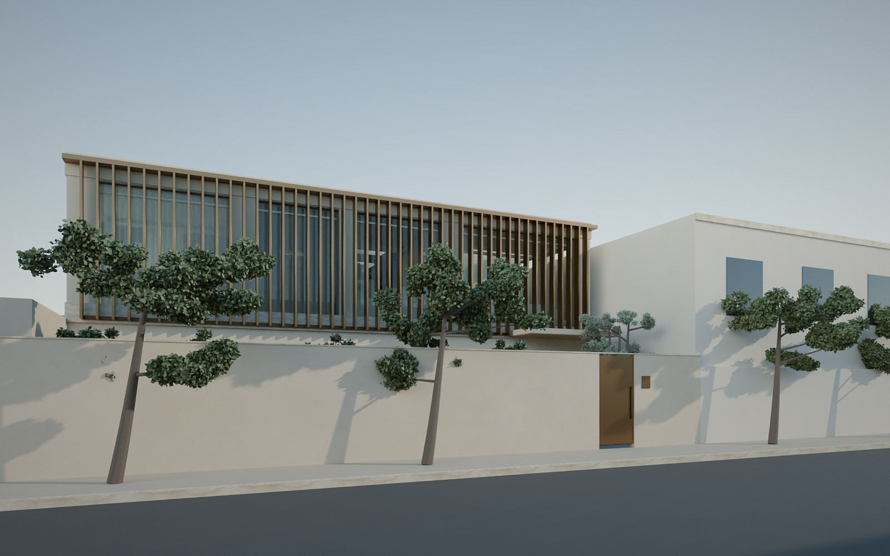
From the street
One continuous screen of bronze aluminium fins wraps the first floor: afternoon shade and privacy, while you still see out. Warm lime-plaster render, a travertine band at the floor line and a slim bronze roof edge.
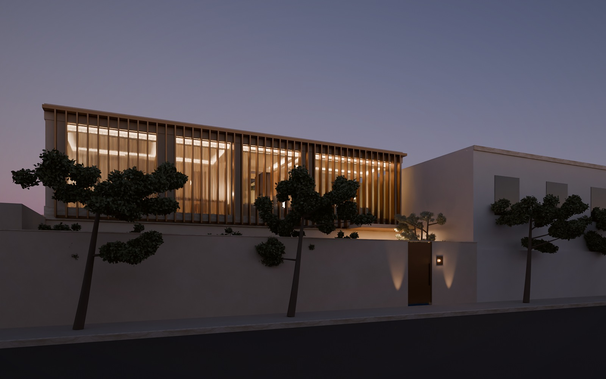
Blue hour
The house glows through the fins, with no exterior spotlights. Wall-washers light the plaster of the entry court and an uplight catches the olive tree.
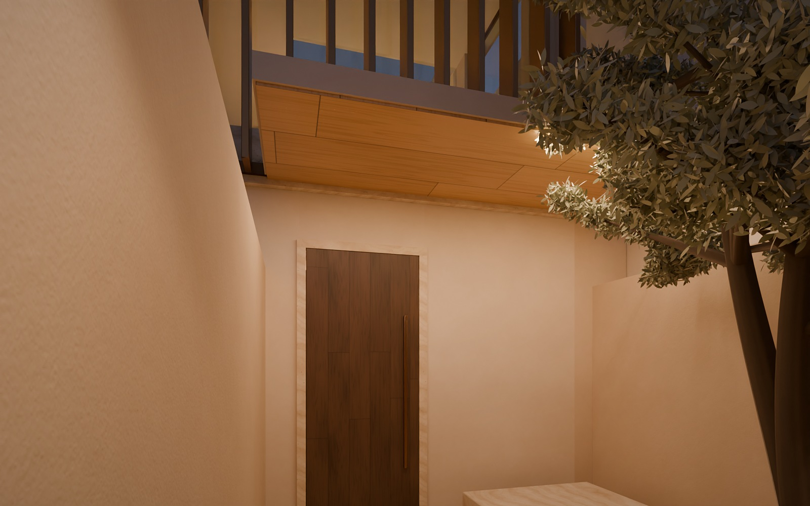
The walled entry court
Your own bronze gate opens onto gravel, travertine stepping stones, a shallow stone water basin and an olive tree. A 3.5 m canopy with an oak soffit shelters the 1.1 × 2.7 m smoked-oak pivot door.
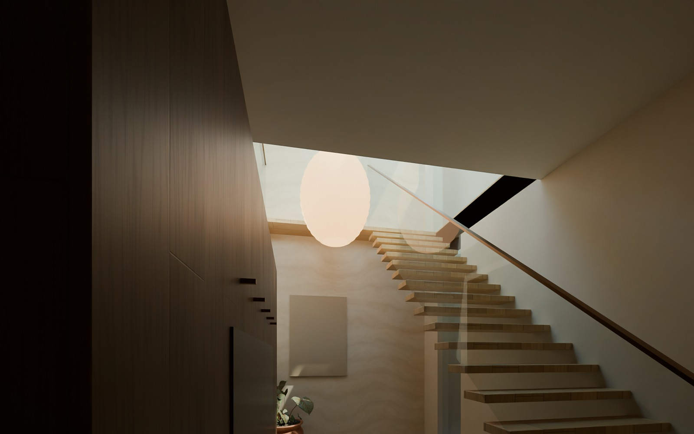
Entrance hall
Compression, then release. A 3.35 m ceiling at the door opens to 7 m under the skylight. Floating oak treads rise beside you toward the light, past a travertine feature wall and a built-in smoked-oak bench wall.
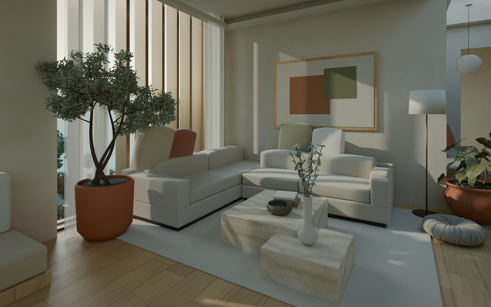
Living room
A low L-shaped sofa in oatmeal bouclé, travertine block tables and a natural wool rug. Sheer linen softens the street glass, and an olive tree in terracotta brings the garden in.
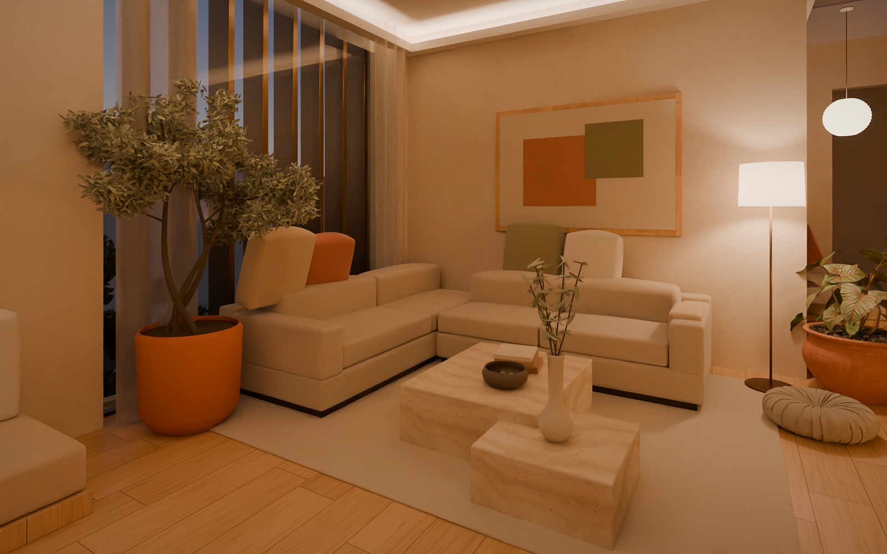
Living room, evening
Warm light only (2700 K), hidden in ceiling coves. Add a floor lamp, the bio-ethanol fire in the long travertine shelf, and no downlights.
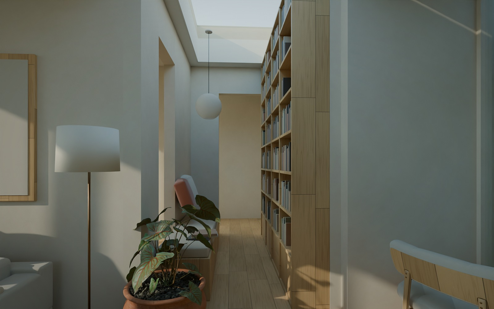
Library alcove
An oak shelving wall faces a cushioned window seat, with light pouring in from the 5.5 m linear rooflight above. The smoked-oak TV wall closes the view.
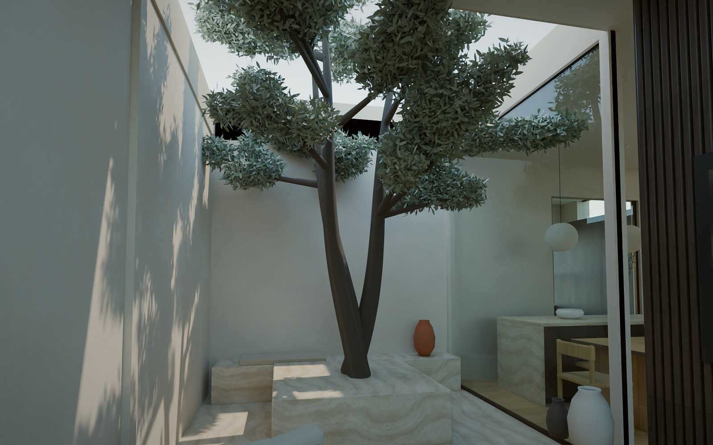
Courtyard
A piece of garden in the middle of the house, open to the sky. One olive tree in a travertine planter, a built-in bench along the back wall and the same floor level inside and out.
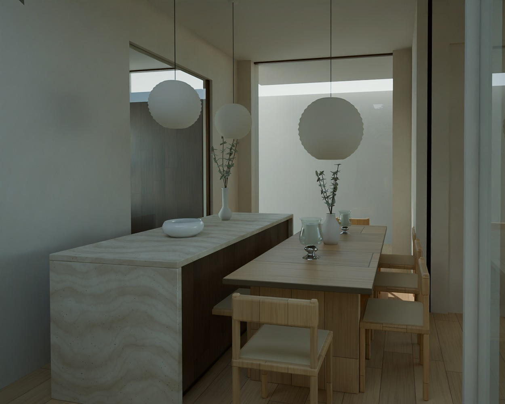
Dining & kitchen
A 2.3 m travertine island with waterfall ends is the clean show piece. The working kitchen sits behind a glass slider in smoked oak. An oak table seats eight on woven-seat chairs under paper globe pendants.
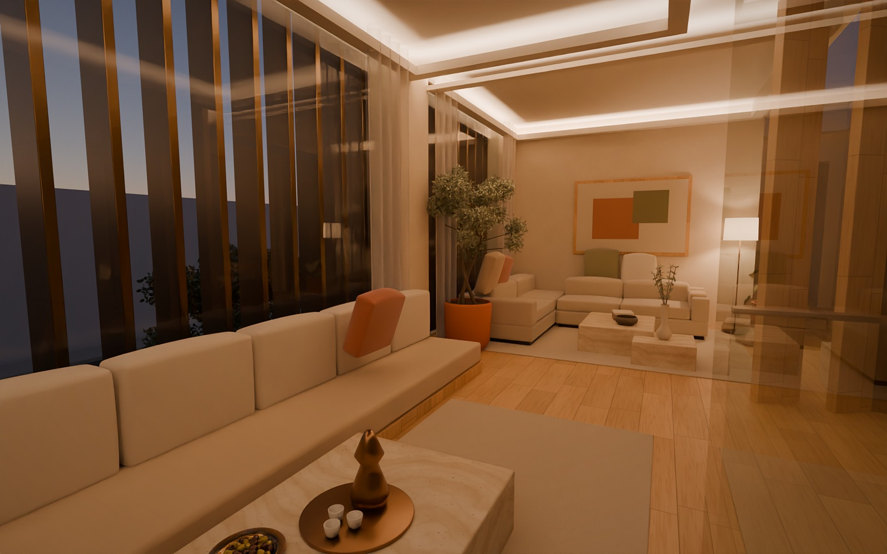
Majlis
Low, deep seating in sand linen, made modern: the majlis tradition with bolsters, a travertine table and a bronze coffee service. Two sliding oak walls open it to the living room and the arrival.
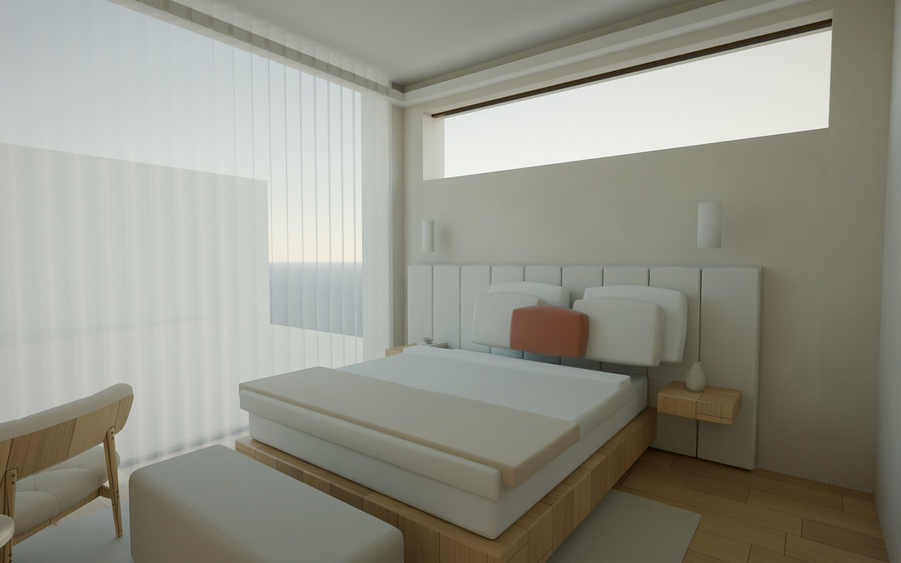
Master suite
The quietest room. A tall upholstered linen headboard, floating oak side tables with plaster wall lights and a bouclé bench at the foot of the bed. Morning light falls from the ribbon window above.
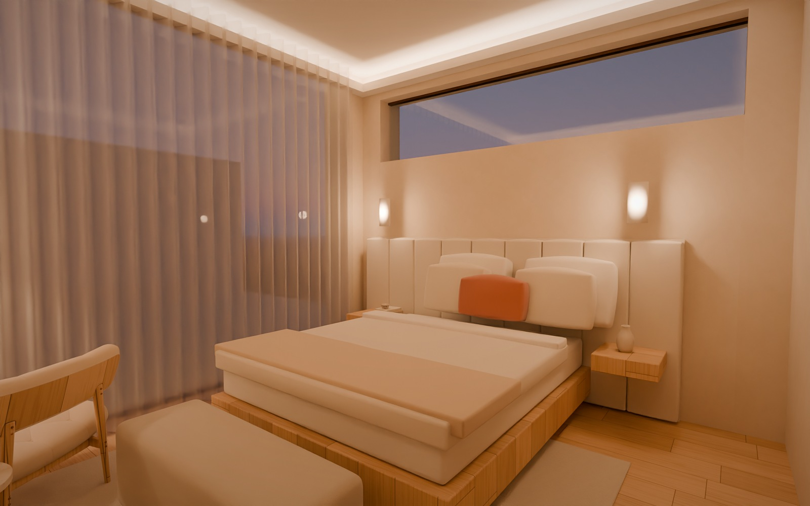
Master suite, evening
Cove light, wall lights and a linen-shaded floor lamp by the reading chair: soft, warm, low.
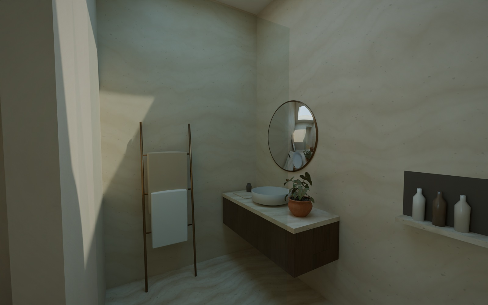
Wellness ensuite
Travertine from floor to ceiling, a walk-in rain shower under its own rooflight, a floating smoked-oak vanity, a stoneware basin and a round bronze mirror.